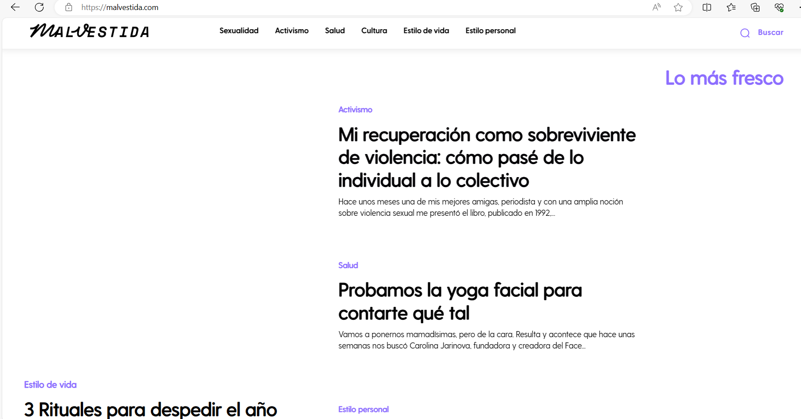
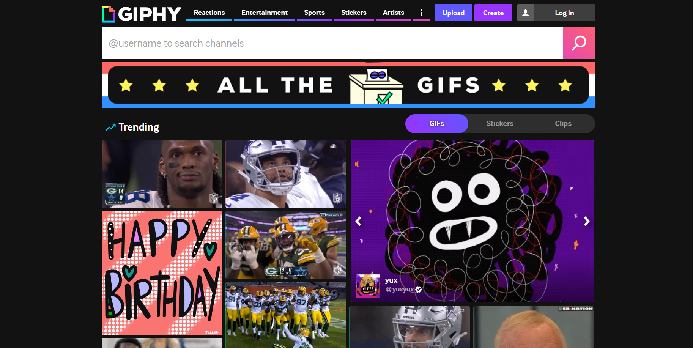
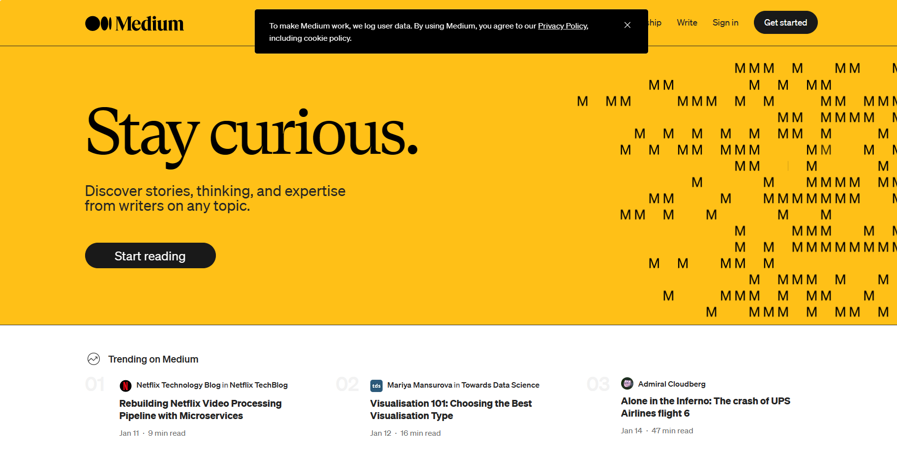
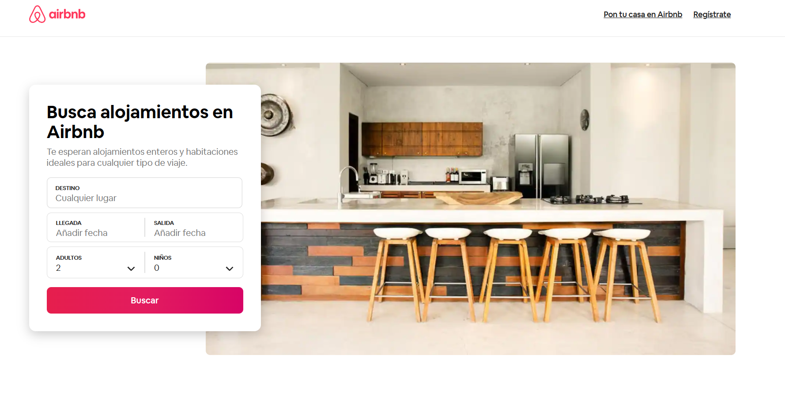

Lo que hacen estas autoras es combinar varios puntos de vista y distintas estéticas en un tema extremadamente colorido y estridente. Compaginan también diferentes técnicas digitales para realzar el contenido que publican. El contraste del fondo blanco con tipografías oscuras y sans serif es un punto a destacar a la hora de hacer contenido.
Giphy es una plataforma que te permite buscar y compartir GIFs y stickers animados en línea. Puedes encontrar GIFs y stickers de todo tipo, desde reacciones, anime, películas, celebridades, deportes, memes y más. También puedes crear tus propios GIFs y stickers con la aplicación móvil de Giphy, que tiene un teclado integrado y bibliotecas de emojis y textos. Giphy es una forma divertida y fácil de expresarte con animaciones.
Medium es una plataforma que te permite descubrir y leer artículos de escritores sobre cualquier tema, desde tecnología y ciencia de datos hasta derechos humanos y duelo. Mantente curioso y aprende de las mejores ideas, conocimientos y experiencias de la comunidad de Medium.
Airbnb es una plataforma que te permite alquilar y ofrecer alojamientos para vacaciones, desde cabañas y casas en la playa hasta apartamentos y habitaciones privadas. Puedes explorar miles de opciones en más de 191 países, con precios y comodidades que se adaptan a tus necesidades. Airbnb también te ofrece experiencias únicas, como clases de cocina, tours culturales, aventuras al aire libre y más. Airbnb es una forma de viajar y vivir como un local.
